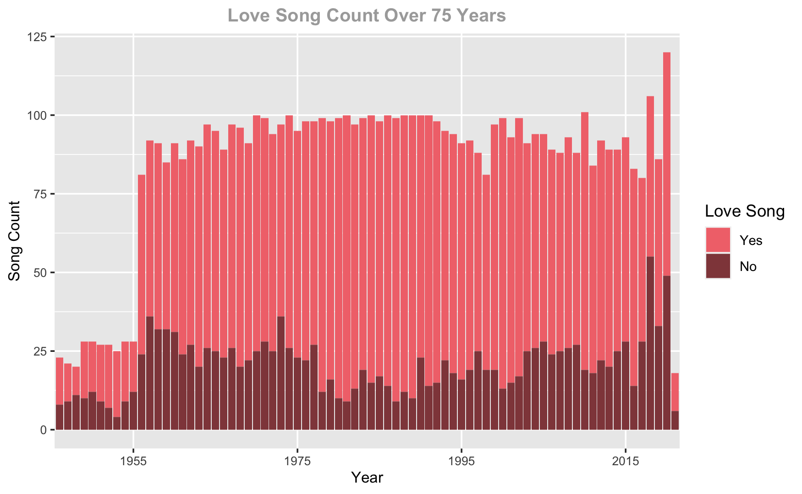
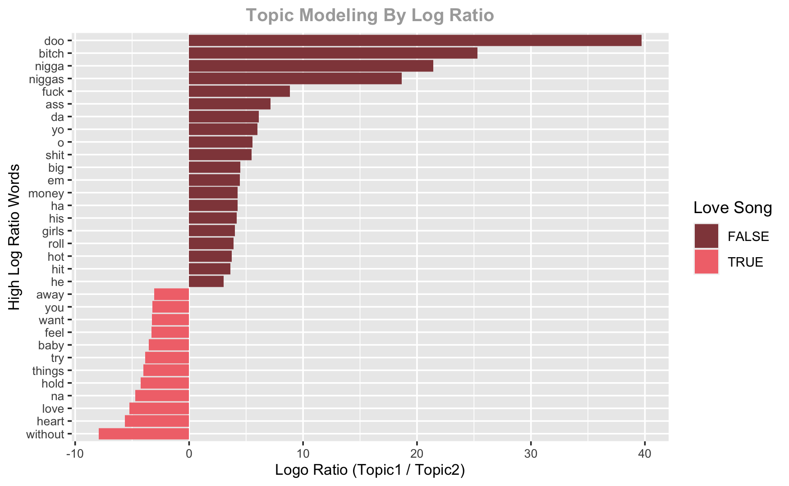
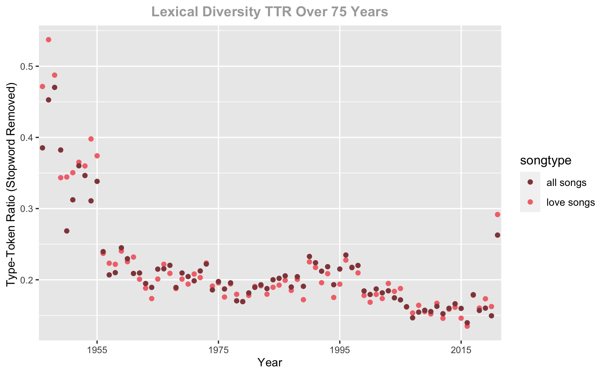
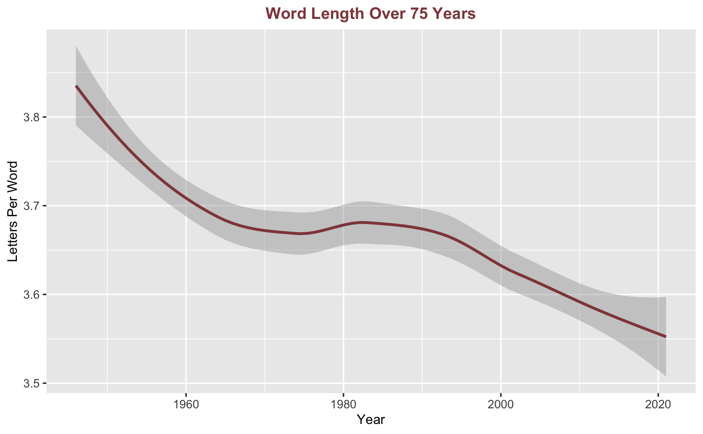
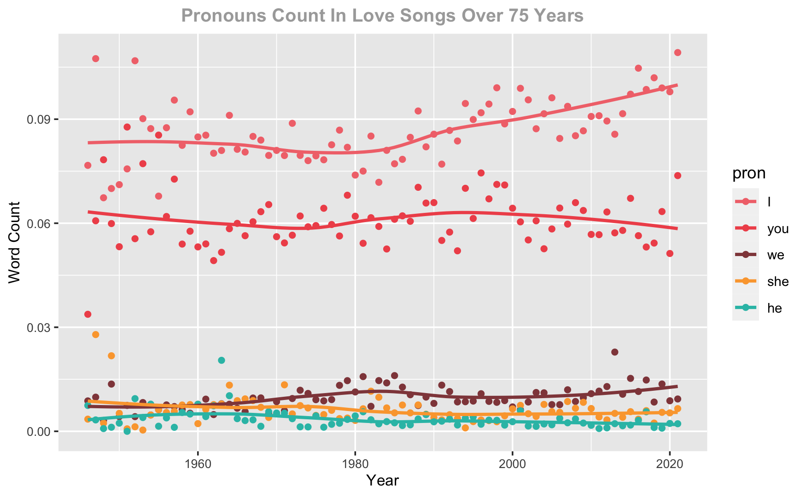
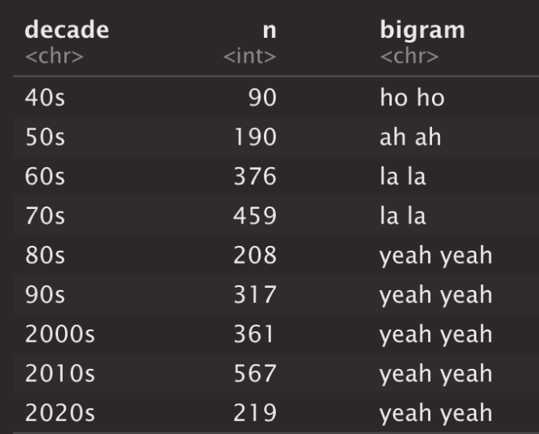

Consumer Studies


⋅⋅⋅⋅⋅⋅⋅⋅⋅⋅⋅⋅⋅⋅⋅⋅⋅⋅
Social Studies


⋅⋅⋅⋅⋅⋅⋅⋅⋅⋅⋅⋅⋅⋅⋅⋅⋅⋅
⋅⋅⋅⋅⋅⋅⋅⋅⋅⋅⋅⋅⋅⋅⋅⋅⋅⋅
⋅⋅⋅⋅⋅⋅⋅⋅⋅⋅⋅⋅⋅⋅⋅⋅⋅⋅
2021
6533 songs
archived on
lyricsondemand
2 sentiment dimensions
arousal
valance
6403 songs
4843 love songs
1,325,550 tokens
R
tidytext
quanteda
stringr
dplyr
wordcloud2
ggplot2
topicmodels
Latent Dirichlet Allocation
Lyrics, as cultural and commercial products, are a gateway to study human emotions. This paper examined the expressions about romantic relationships in the pop song lyrics and discovered the trend of how artists tell their love stories over nine decades, from 1946 to 2021. The pandemic year stood out as an outlier in that both “love” and f-word spiked. Several distinctive trends were weaving through decades: the sentiment of the love songs are getting less positive, the word “I” are trending up, the top bigram has been staying with “yeah yeah” since 1980s and the complexity have been sliding down.
The linguistic complexity is dropping down over nine decades; the intensity of emotional expression is decreasing; the emotions in love songs are growing less positive.
Latent Dirichlet Allocation topic modeling effectively separated out Love Songs from non-love songs. Love songs take about three quarters of all songs. Below is a year by year distribution of song counts, with love songs on top over non-love songs.
By looking at the strongest difference in word use in the two topics by the log ratio, we can see clearly that topic one is love song, with words such as “baby”, “want”, “you”, “love” and “heart” and the sense of longing in “away” and “without”. The topic two exhibits a lot of rap song typical words, such as explicit (e.g. “bitch”, “nigga”, "shit") and colloquial (e.g. “em” and “yo”) words.
The lexical diversity measured by type-token ratio (TTR) dropped significantly from 1940s to 1950s and slowly trended downward all the way till 2020. We see a spike in 2021. It would be great to look back at 2021 next year when there is a full archive of the pop songs for this year.
The word length dropped in two steep slopes from 1940s to 1980s and then from 1990s to 2020s. The stopwords (or style words such as pronouns, articles, propositions) are included in the word length study. That lowered the average word length to below 4 letters throughout the time frame in the study.
The “Romance Thermometer” is quantifiable emotional expression measurements in two dimensions: arousal and valance, based on Russell’s Model.
The gold-fish-esque image has its body as positive and tail negative. We can see the tail gets more dense over decades, meaning that the sentiment in love songs is getting less positive. The gold fish floated at the same stratification, meaning the arousal level did not change much decade over decade.

The word “love” (or “loved”, “lovin”) are examined in year over year occurrence count among the 4843 love songs. An almost perfect sine wave pattern emerged on the graph, from 1946 to 2021. The use of word “love” peaked in the late 1960s to 70s and tanked during the 2010s. It’s uplifting to see that in spite of difficult years in 2020 and 2021, the word “love” is trending up.

Pronouns are very telling of emotions. More “I” implies the intensity of emotional pain increases if in a negative song context and the attention assignment toward oneself. “I” trends upward in recent decades, while “you” is dropping. “We”, “she”, and “he” are all lying low consistently in love songs, in comparison to “I” and “you”.
Bigrams in songs are often non-meaning beat-filling words, repeated and one syllable per beat. Here we look at the top bigram from each decade and notice that ever since the 1980s, the bigram "yeah yeah" has stayed on top of the chart as the favorite beat filler of songwriters.
The top words for all decades in the "happy" love songs and "sad" love songs categories are shown in the word clouds below. "Lonely" and "alone" stand out in the sad songs, while "love" and "baby" stand out in the happy ones. The word "love" occurred 15820 times, far outnumbered the other positive words, which occurred mostly below 1000 times. The distribution of the sad song words are more even.